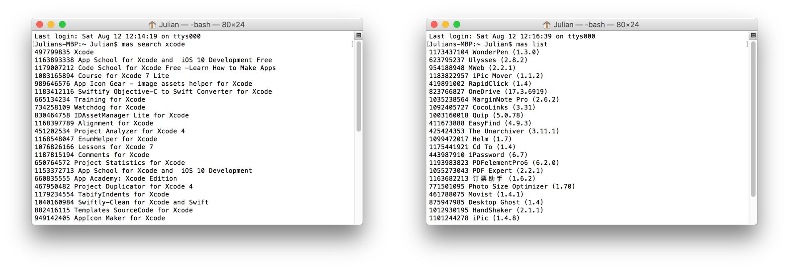
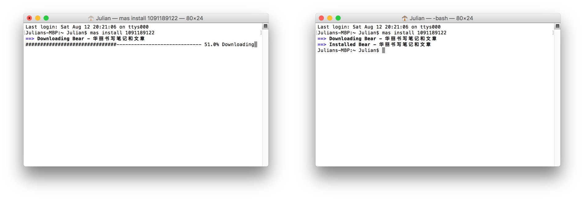
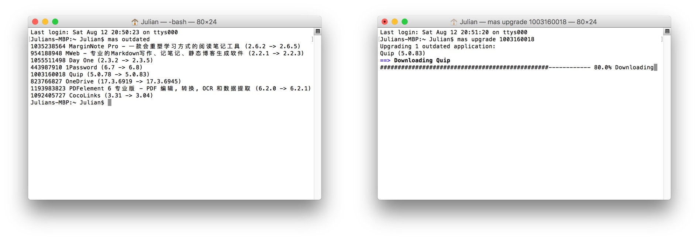

本文被少数派精选并推荐至首页：点此查看
以下这 3 点是不是你在用 Mac App Store 时想要的？
- 不想再忍受 Mac App Store 缓慢的打开速度；
- 批量安装或更新 Mac App Store 应用；
- 快速切换 Mac App Store 账号。
如果是的话，你必须得试试终端上的 Mac App Store —— mas。
安装
Homebrew 是安装 mas 的最好方式，在只要把以下代码复制到终端（Terminal）后运行即可：
brew install mas
如未安装过 Homebrew 可参照 官网命令 安装：
/usr/bin/ruby -e "$(curl -fsSL https://raw.githubusercontent.com/Homebrew/install/master/install)"
查询与安装应用
mas 作为终端上的 Mac App Store，其劣势是无法随意浏览众多应用、没有编辑推荐、没有排行榜… 但也因为不用加载这么多东西，甚至不用加载图片，它才有着惊人的速度。
Mac App Store 中每一个应用都有自己的应用识别码（Product Identifier），这可以在每个应用的链接中看到。mas 就是根据 Product Identifier 安装与更新应用，也提供了查询应用 ID 的命令。
由 1Password 的链接可知其识别码为 443987910
https://itunes.apple.com/cn/app/1password/id443987910?mt=12
除了查看链接，有以下 x 种方法获取应用的识别码：
- 用命令
mas search 关键词查询应用。比如在终端中执行mas search xcode，大概 1 秒就显示了结果； - 用命令
mas list查询已安装应用及其识别码。

安装应用只需知道此应用的识别码就可以安装具体软件。比如安装 Bear，流程如下：
- 由命令
mas search bear得知应用 Bear 的识别码为 1091189122； - 第二步：使用命令
mas install 1091189122安装。
注意：
- 应用必须在商店登陆账号的已购列表中，因为命令行无法完成「购买」这个操作；
- 对于新上架的应用，可能无法查询到其识别码。因为 mas 的查询列表在缓存文件中，目前尚不清楚其列表更新周期，但若由其他途径（如应用链接）得知新上架应用识别码，仍可正常安装。

我们不仅可以使用命令行安装单个应用，还可以批量安装应用，只需在应用识别码之间加上空格：
mas install 甲应用识别码 乙应用识别码 丙应用识别码
更新应用
如果要更新所有 Mac App Store 应用，只需终端执行一句命令：
mas upgrade
如果更新特定应用，需要使用命令 mas outdated 先查询待更新列表以获取应用识别码，再更新一个或几个应用：
mas upgrade 甲应用识别码
mas upgrade 甲应用识别码 乙应用识别码 丙应用识别码

但要注意，mas 无法用于系统更新，即只能更新显示在 Mac App Store 中的应用。但可以使用命令 softwareupdate -l 获取系统更新列表，然后使用 sudo softwareupdate -iva 进行更新。
切换 Mac App Store 账号
这是多区账号拥有者的福音，我们终于可以更方便地下载和更新其他区的应用了。如果忘记了当前帐号，使用命令 mas account 查询。可用命令 mas signout 退出当前帐号，并按如下命令登陆新的账号：
mas signin Apple ID "密码"
如：mas signin mas@example.com "mypassword"
也可以设置命令别名以得到更爽快的体验，在隐藏文件 .bashrc 中添加以下内容：其路径为 ~/.bashrc，同时按 shift + command + . 可显示隐藏文件。
alias masus='mas signout && mas signin myusappleid "mypassword"'
alias mascn='mas signout && mas signin mycnappleid "mypassword"'
alias mas?='mas account'
需重新打开终端以载入设置，那么在终端中执行 masus 即可切换到美区帐号，mascn 即切到中区，mas? 可查询目前登陆帐号。但如果开启了双重认证，可能遇到错误信息：
Error: Sign in failed: The operation couldn’t be completed. (mas.MASError error 1.)
关闭双重认证则一切正常，但并不建议这样做，可以考虑关闭非重要帐号的双重认证，但 iOS 10.3 或 macOS Sierra 10.12.4 及更高版本中创建的某些帐户，无法关闭双重认证。mas 团队正在着手处理开启双重认证无法登陆的问题，可去 督促一番。
在问题解决之前该怎么办：在 Mac App Store 中登陆帐号，然后重新打开终端（Terminal）即可。
总结与美好的设想
我们可以在 GitHub 上的 mas 项目 查看官方使用说明，或以 mas help 查看所有命令及其说明。之前介绍过 Homebrew Cask 如何安装应用，它的作用对象是非 Mac App Store 应用，而 mas 的对象是 Mac App Store 应用，两者互补无憾矣。
也许我们可以考虑如何合并两者，我觉着至少 查询与安装应用 阶段是可以融合的，brew cask search 关键字 与 mas search 关键字 这两个命令合为 cmas search 关键字，输出的结果可以是如下样子，而安装命令 cmas install 应用识别码或应用名称 关键字如果是应用识别码则从 mas 下载安装，如果是应用名称则从官网下载安装。
cmas search pai
sspai 6666666 (mas & NMAS)
ddpat 9999999 (mas Only)
onlypai (NMAS Only)
谢谢让 JailbreakHum 忙碌的人，谢谢 JailbreakHum 因忙碌而告诉我这个超级棒的技巧，谢谢 JailbreakHum 的指导……
本文应用版本：

扫一扫即可关注微信公众号